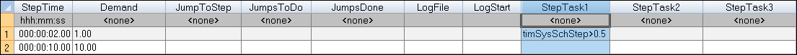
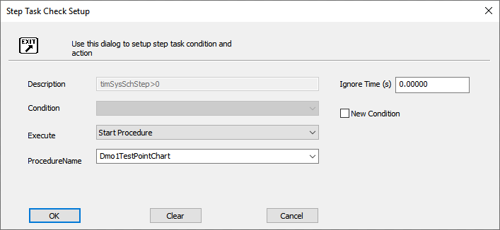
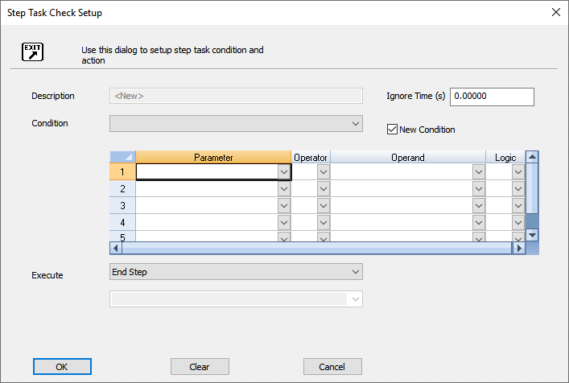
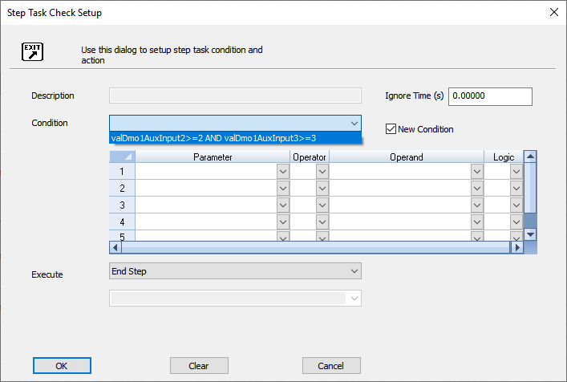

iTest User's Guide
This document describes the Step Task columns in iTest schedules. iTest schedules contain three step task columns. When a new step is entered, it is continuously evaluated in order from left to right. The first time a step task's condition evaluates as true, Schedule Runner executes the action defined in the step task. At this point, the evaluation of the step task stops, and the schedule remains on that step unless an End Step or Go To Step action is triggered.
The following image displays the step task columns in an iTest schedule.
Step Tasks within Schedules

 |
NOTE: | Throughout iTest step conditions may also be referred to as end of state (EOS) conditions. |
Each step task consists of four elements:
The Step Task dialog is shown in the image below:
Step Task Check Setup Dialog

There are two methods for using step conditions in the Step Task Check Setup dialog:
If you create a new condition in the Step Task Check Setup dialog, the step condition is not reusable. It's only available for the current step task instance (to reuse the expression it has to be reentered). This means that if the logic in the environment changes, the expression must also be changed in every instance of its use.
Unlike new conditions, predefined step conditions are reusable, and the step condition can be referenced from multiple locations. If the logic needs to be changed, it is modified in one location, and the change is applied to all instances of the condition in your solution. Predefined conditions are set up in Test Manager's Step Conditions folder, which can be accessed by expanding the Test Development > Step Conditions folders in the tree bar. Steps for setting up reusable conditions are described in the Create New Step Condition section below.
To create a new step condition, select the New Condition checkbox on the Step Task dialog. Selecting this option displays the editor used to define the parameter, operator, operand, and logic of the new step condition. This is shown in the following image:
New Condition

Alternatively, a named and previously written step condition can be selected by using the combo box to the left of the New Condition option. When you select this option, a list of existing step conditions displays.
Predefined Step Conditions

The available step task actions and their arguments are described in the table below:
Step Task Actions - Descriptions and Arguments
| Option | Description | Argument |
| Change Log Time | Supports high-speed logging during the transient part of a step; it then changes to snapshot logs for the remainder of the step. | New Log Time (in seconds) |
| End Step | Stops the step immediately and proceeds to the next scheduled step. | None |
| Go To Step | Ends the current step and goes to the specified step number indicated in the dialog. | Valid Step Number or Label |
| Increment Value | Adds a constant value to the current value of a channel; subtracts if a negative value is used. Syntax similar to "set value": channel +1, where 1 can be any numeric value. To decrement: channel +-1 | Channel + Value |
| Jump To Step | Jumps ahead to specified step indicated in the dialog. | Valid Step Number or Label |
| Pause | Holds the test until a ResumeSchedule command is received. | None |
| Pause GoToStep | Resumes from Pause and the test goes to the user-entered step number rather than the next step. | Valid Step Number |
| Save Value | Writes the channel name and value to the circuit's INI file so the value can be restored when iTest is restarted. | Alias Name |
| Set Value | Sets a channel or parameter to a value with the syntax channel=value. To set multiple values simultaneously, separate the channel=value inputs by semicolons. value can also be a simple expression with operators +, -, * or /. For example,Cntr1=Cntr2+Cntr3;Cntr4=Cntr1;Counter4=Counter2*6.Note: String channels are not supported. |
Channel = Value |
| Start New File | Supports breaking a potentially extremely large data file into smaller sections. It appends three digits to the current data file name starting at "001". Each time this action is executed the extender is incremented by 1. If this action is executed after the extender reaches "999", it results in an error message, and the extender is not incremented. | None |
| Start Procedure | Launches the procedure asynchronously (spawn). The procedure name can be entered directly or selected from a picklist. The Start Procedure picklist is defined in the picklist file set by the EOSActionPickList= powertek.ini setting (e.g., EOSActionPickList=SysActions).Any necessary procedure arguments should be included in parentheses; for BTS, a special circuit index argument is typically required (i.e., <procedure name>($index$)). |
Procedure Name |
| Stop Test | Stops the Schedule Runner from running the schedule. | None |
| Start Log | Starts the specified data log | name of data log or name of Virtual String containing the name of the data log |
| Stop Log | Stops the specified data log | name of data log or name of Virtual String containing the name of the data log |
| Module Action* | Sends a module action to the selected module(s). For more information, refer to the ModuleAction documentation. | Module(s) and Action. Both are selected from predefined fixed lists. |
| System Action* | Sends a system action to the selected module(s). For more information, refer to the SystemAction documentation. | Module(s) and Action. Both are selected from predefined fixed lists. |
| Stop Master Schedule** | Prematurely stops the master schedule at its current step. | None |
| End Loop** | Ends the loop on its current step. | None |
| Top of Loop** | Ends the current step and proceeds to the first step of the loop. | None |
| Pause Master Schedule** | Holds the test in its current position until a ResumeSchedule command is received. | None |
| Spawn Python Script** | The specified script is started when the condition is met the first time. Choosing this option enables you to specify a script in the Script String field. | Python Script Name |
You can create new step conditions so that they are reusable in different schedules. This also allows you to modify the step condition from a centralized location and apply the changes to all instances of the step condition in your solution.
To add a new, reusable step condition, do the following:
After you save the solution, the new step condition is automatically named by combining the first two expressions of the condition. When you add new step tasks to schedules, the new step condition is listed as an option in the Step Task Check Setup dialog.
|
NOTE: | Any changes to step conditions while AutomationPanel is running do not take effect until AutomationPanel has stopped and restarted (or a $REBUILD command occurs). |